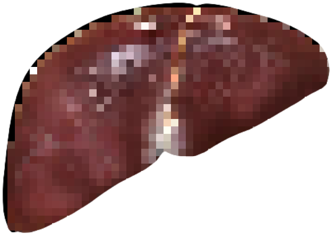
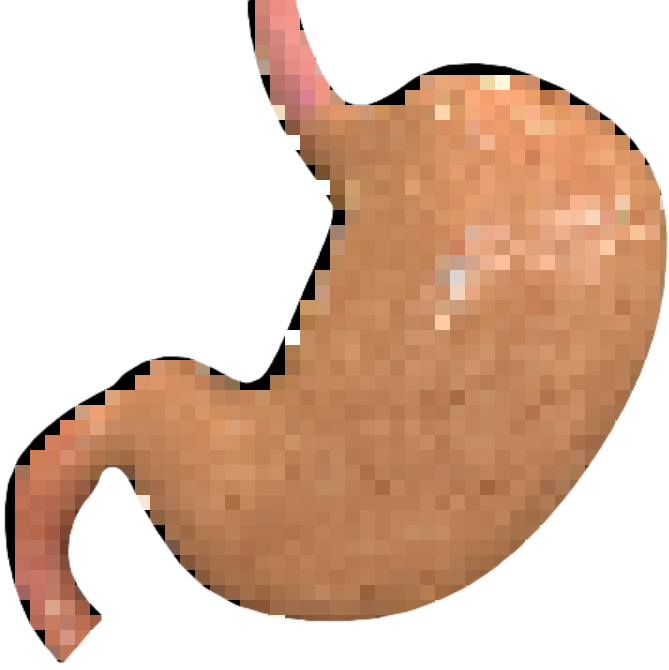
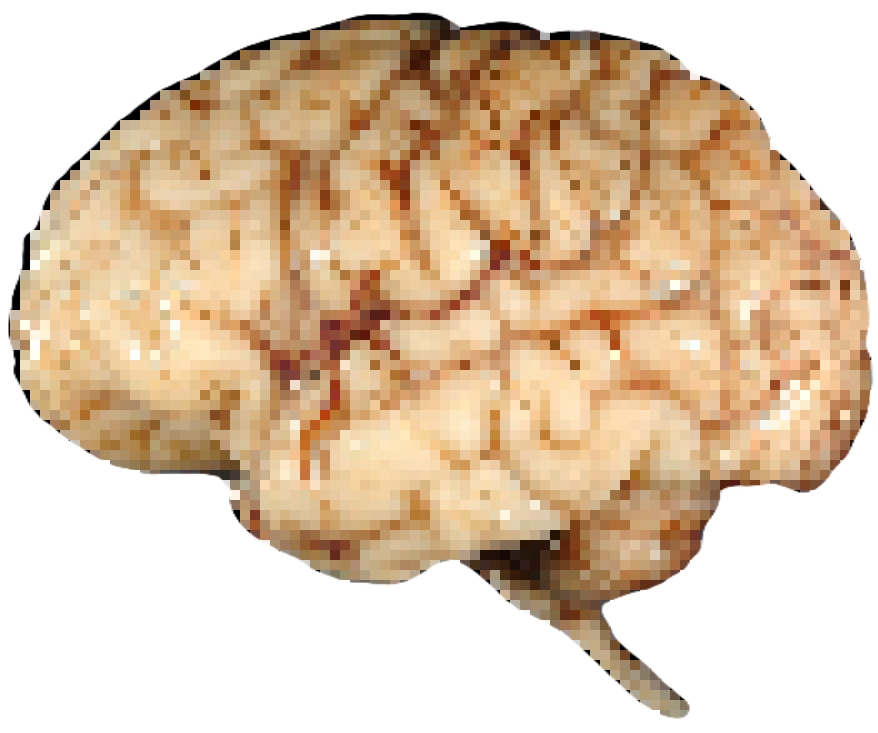
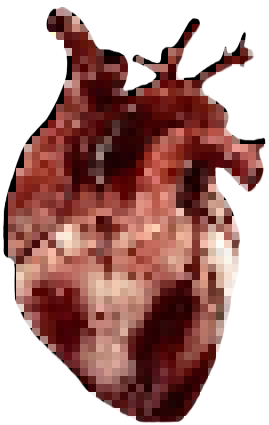

specimen tray no. 1
— handle with care
click on an organ to reveal its secrets

liver
i am your
be-LIVER

stomach
lowkey you make
me consider canibalism
(not seriously dw)

brain
you're always on
my mind
miaw

you smell
way too nice

heart
you kinda make my
heart skip some beats